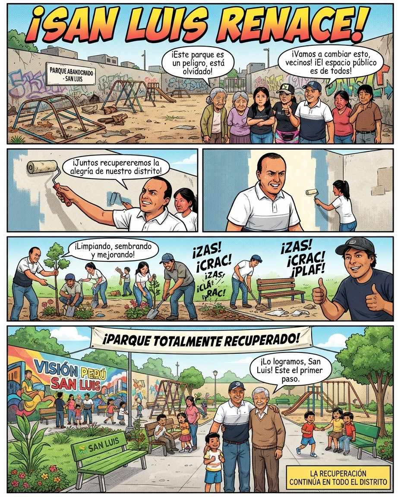
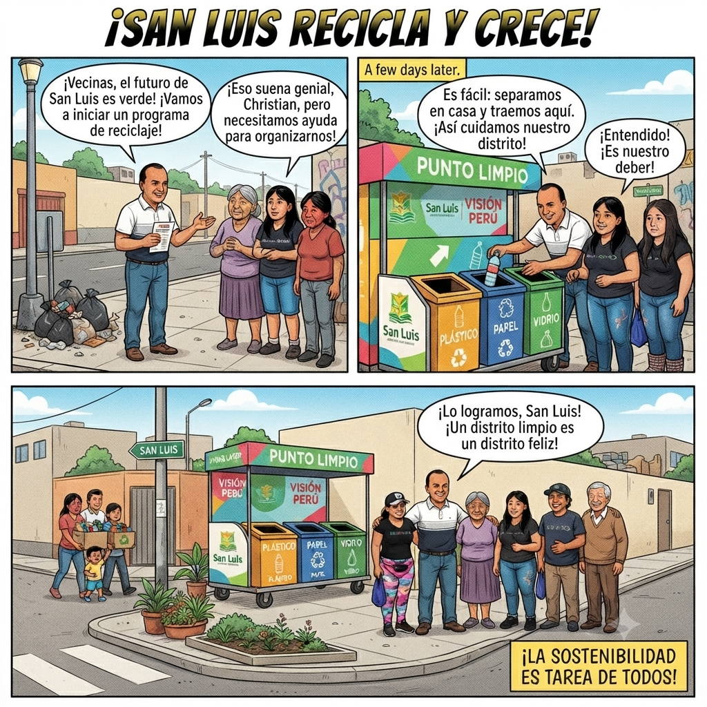
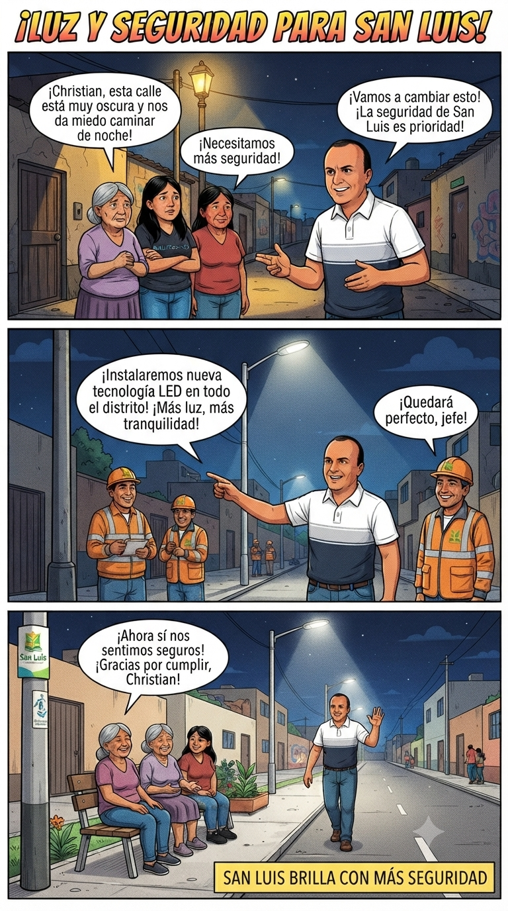
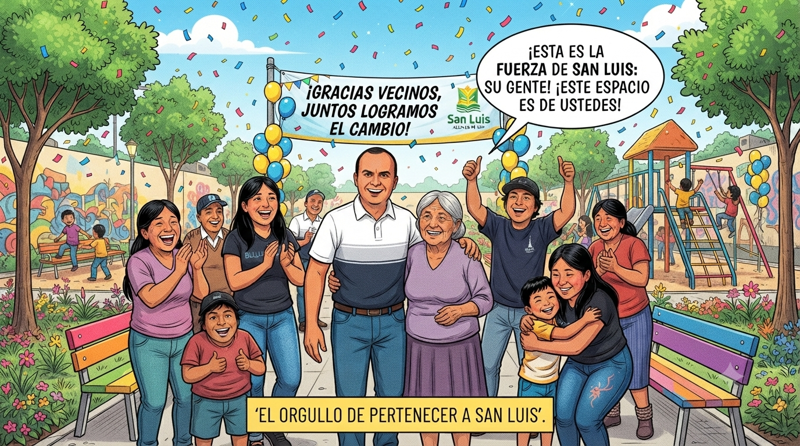
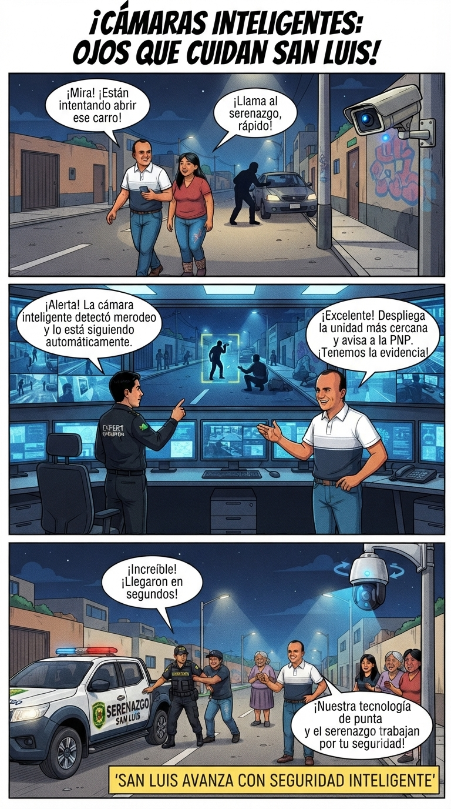
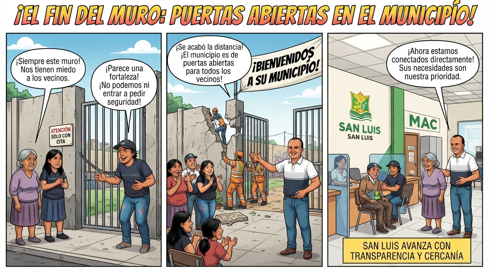
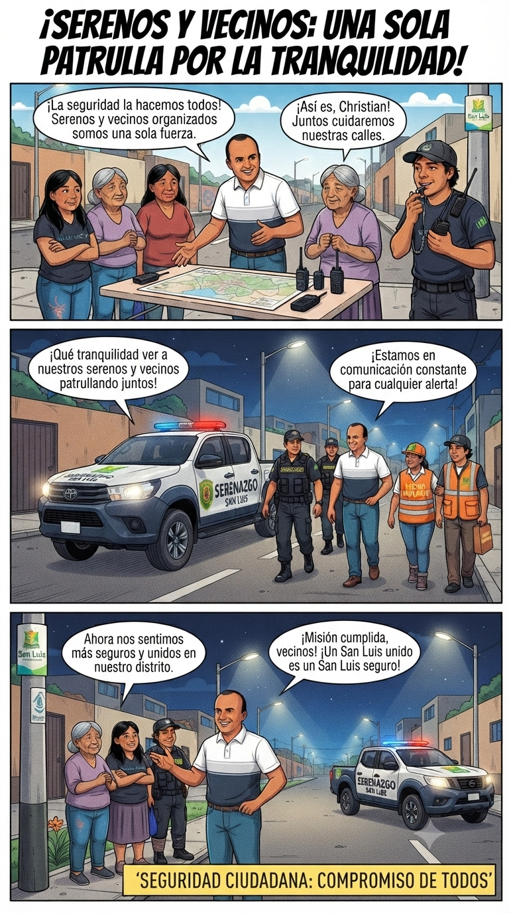

"¡San Luis Renace! Recuperación de Espacios Públicos"

Recuperación de parques abandonados y embellecimiento de áreas verdes junto a los vecinos del distrito.
"¡San Luis Recicla y Crece! Gestión Ambiental y Puntos Limpios"

Implementación del programa de segregación en fuente y contenedores comunitarios para un distrito ecoamigable.
"La misma calle ahora está brillante y segura, y los vecinos disfrutan del espacio con tranquilidad"

Instalación de luminarias LED y red interconectada de videovigilancia en puntos críticos.
"¡GRACIAS VECINOS, JUNTOS LOGRAMOS EL CAMBIO!"

El orgullo de pertenecer a San Luis.
"Cámaras Inteligentes: Ojos que Cuidan San Luis"

Trabajo articulado entre el serenazgo distrital y la junta vecinal para la prevención del delito.
"Serenos y Vecinos: Una sola Patrulla por la Tranquilidad"

Acompañamiento a emprendedores y ordenamiento del espacio público para un comercio formal.
"Serenos y Vecinos: Una sola Patrulla por la Tranquilidad"

Central de emergencias unificada y canales digitales directos entre la municipalidad y la comunidad.